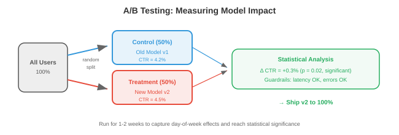
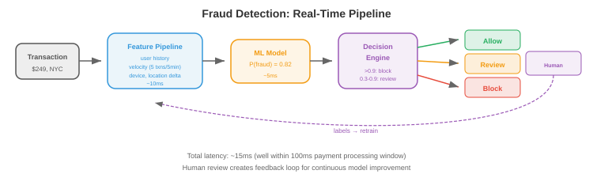
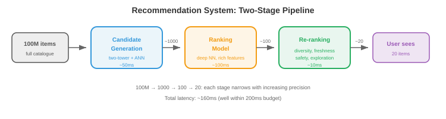

Maths, CS & AI Compendium · Chapter 18
The Plant Behind the Model
Every replica count in the source’s design examples is the load at which the queue never empties. Little’s law gives the mean; your inventory training gives the margin. Requests in service are Poisson, so spare capacity is safety stock, and it grows only as the square root of the load.
Sheet 17 built one inference server and found that its batch is set by Little’s law (Sheet 17 §14). This sheet starts where that one stops: many servers, daily peaks, failures, spare capacity, the network between machines, and the training cluster, which is the largest series system most engineers will ever meet. The source’s five files cover systems design fundamentals, cloud computing, large-scale infrastructure, ML systems design and seven worked designs. Read as a plant engineer reads a plant, they turn out to be capacity planning, reliability engineering and quality control, and most of their numbers can be checked by hand. They are, in §20.
The headline is §03. The number of requests being served at once is a Poisson count whatever the service-time distribution, so the servers you need are the mean plus \(z\) standard deviations of that count: \(c = a + z\sqrt{a}\), which is the reorder point of a Poisson-demand item. It explains why the source’s 50 replicas never catch up (§02), why a large plant can run hotter than a small one at the same delay, and how many of Sheet 17’s servers a growing help desk really needs (§21). Two other results carry the rest of the sheet. Redundancy is a reliability block diagram until a bad deploy makes every replica fail at once, and the β-factor model of common-cause failure puts a floor under it (§09). And a request that fans out to a hundred shards waits for the slowest one, which is PERT’s merge bias again (§12).
| Source says | Computed | Where |
|---|---|---|
| “~50 model replicas” for 10,000 requests/s at 5 ms, and the same arithmetic for every other service in file 05 | 50 is the offered load. At 50 replicas utilisation is 100% and the mean wait is unbounded; 51 gives 4.2 ms, 55 gives 0.39 ms. | §02 |
| Ranking needs “1000 GPU-seconds per second → ~10 A10G GPUs” | 1,000 GPU-seconds per second is 1,000 GPUs busy. Ten GPUs work only if each holds 100 requests in flight. | §02 |
| Image index “~128 GB for 1B × 512-dim × float16 + graph overhead” | The vectors alone are 1.024 TB. 128 GB is the size of the graph links alone. | §20 |
| HNSW “adds ~2x overhead” | +25% at the usual \(M = 16\), +50% at \(M = 32\). Doubling needs \(M = 64\). | §20 |
| Checkpoint “70B × 4 bytes × 2 for optimiser” = 560 GB | Adam keeps two moments: fp32 weights, \(m\) and \(v\) are 12 bytes a parameter, 840 GB. | §16 |
| NVLink “30x faster than PCIe” | 900 GB/s counts both directions. Like for like against PCIe 5.0 it is 7.1×. | §17 |
| A 16,000-GPU cluster must read “~100 GB/s of data continuously” | Text training reads 11 to 62 MB/s. 100 GB/s is the scale of a checkpoint burst, or of pixels. | §17 |
| 10 GPUs at peak, 2 at night: autoscaling “saves ~60%” | The saving is one minus the load factor: 40% for a 12-hour peak. 60% needs a 6-hour peak. | §13 |
| Read replicas scale read throughput “linearly” | Every replica applies every write, so throughput follows Amdahl’s law with the write share as the serial fraction: 6.9× from 10 replicas at 5% writes, never more than 20×. | §06 |
| A 0.1% CTR improvement needs “millions of impressions” | A relative 0.1% at a 2% CTR needs about 1.5 billion. An absolute 0.1-point lift needs about 0.6 million. | §19 |
Identity means the same formula or procedure, checked numerically. Same structure means the parts correspond but nothing is computed through the correspondence. Breaks means the section shows where it stops being true.
| What you already know | What this chapter calls it | Verdict |
|---|---|---|
| Little’s law: WIP = throughput × lead time | Servers busy = requests per second × service time | Identity. Every sizing in file 05 is this. See §01. |
| The utilisation cliff (Sheet 13 part 2 §06) | Latency against load; the source’s replica counts | Identity. The source sizes at \(\rho = 1\). See §02. |
| Safety stock and the reorder point for Poisson demand | Spare servers, \(c = a + z\sqrt a\) | Identity for the count in service. See §03. |
| A shared machine pool against dedicated machines | One queue for all servers against sticky routing | Identity. 19.6× less waiting at 10 servers. See §04. |
| The RSS tolerance stack (Sheet 04 §05) | Load spread on a hash ring with virtual nodes | Identity. Spread falls as \(1/\sqrt v\). See §05. |
| The station that cannot be split (Sheet 13 part 2 §16) | Writes on a replicated database | Identity. Amdahl with the write share. See §06. |
| Series and parallel blocks (Sheet 05 §03) | A request path through services; replicas | Identity while failures are independent. See §§07, 09. |
| 2-out-of-3 voting | A majority quorum (Raft) | Identity. Even cluster sizes are worse. See §08. |
| The β-factor model of common-cause failure | Region outages, shared software, a bad deploy | Same model; for a software bug β is near 1. See §09. |
| A storage buffer between transfer-line stations | A message queue between services | Identity for throughput. Breaks for a user who is waiting. See §10. |
| An autorecloser; a surge tank; breaking step on a bridge | A circuit breaker; a token bucket; retry jitter | Same structure. The tank is an exact mass balance. See §11. |
| PERT’s merge bias (Sheet 14 part 1 §09) | Tail latency of a fan-out request | Identity: the maximum of \(n\) draws. See §12. |
| The load-duration curve and load factor | Autoscaling | Identity: saving = 1 − load factor. See §13. |
| Base-load and peaking plants; the diversity factor | Reserved and on-demand capacity; a shared cluster | Identity. Same screening rule. See §14. |
| A series system, \(\lambda = \sum \lambda_i\) | A synchronous training job on 16,384 GPUs | Identity for exponential lives. See §15. |
| The economic order quantity | The checkpoint interval, \(\sqrt{2\delta M}\) | Identity. See §16. |
| Acceptance sampling and the OC curve (Sheet 04 §07) | The sample size of an A/B test | Identity. See §19. |
| Gauge correlation; incoming inspection; feedback with a delay | Training–serving skew; data validation; retraining loops | Same structure. See §19. |
| Order-of-magnitude estimation | Back-of-envelope sizing | Same method. The source’s own estimates miss by 8× and 100×. See §20. |
| — | Consensus, logical clocks, the CAP theorem | No counterpart. Learn these cold. See §08. |
File 01 opens with the client–server pattern: a client sends a request, a server does the work and replies. A stateless server keeps nothing between requests, so any server can take any request, and adding capacity means adding identical servers behind a load balancer. A stateful server remembers a user’s session, so that user’s requests must go back to the same machine. In shop-floor terms a stateless pool is a group of identical machines that can each do any job, and session affinity ties a job to one machine. §04 shows what that tie costs.
The first sizing question for any such pool is how many machines are busy on average, and Sheet 13 part 2 §06 already gave the answer. Little’s law says the average number in a system equals the arrival rate times the average time each item spends there:
Apply it to the time a request spends being served, and \(L\) is the average number of
requests in service at once. A replica that serves one request at a time is busy
exactly when it holds one, so \(L\) is also the number of replicas that would be busy
all the time. Queueing theory calls \(a = \lambda s\) the offered load, measured
in erlangs. Every sizing in the source’s worked designs is this product
([Ch18 s01]):
| Service | λ, per second | s, service time | a = λs | Source’s count |
|---|---|---|---|---|
| User-embedding model | 10,000 | 5 ms | 50 | ~50 replicas |
| ANN index search | 10,000 | 2 ms | 20 | 20 replicas |
| Ranking model | 10,000 | 100 ms | 1,000 | ~10 GPUs (§02) |
| Text moderation | 12,000 | 5 ms | 60 | ~60 |
| Image moderation | 12,000 | 20 ms | 240 | ~240 |
| Hash matching | 12,000 | 1 ms | 12 | ~12 |
| Ad click prediction | 100,000 | 10 ms | 1,000 | (not sized) |
The moderation rate is the source’s one billion posts a day divided by 86,400
seconds, which is 11,574 a second; it rounds to 12,000. Little’s law assumes
nothing about distributions or scheduling, so a simulation of 50 servers with Poisson
arrivals and fixed service times confirms it to the third figure: the time-average
number in the system is 40.27 and \(\lambda W\) is 40.28 ([Ch18 s01]).
A shop that starts 12 jobs an hour, each spending 5 hours on the floor, carries 60 jobs of WIP. A plant that receives 12,000 posts a second, each spending 5 ms in a text classifier, keeps 60 classifiers busy. Sheet 17 §14 used the same law on one server and found its batch size; here it sizes every station in a plant. The law holds for averages, and it is silent about two things a plant engineer always asks next: how much the count varies, and how long items wait. Those are the next two sections.
The offered load is the number of servers that would be busy all the time. Provide exactly that many and utilisation \(\rho = a/c\) is 1. Sheet 13 part 2 §06 showed what happens to one server as \(\rho\) approaches 1: the queue grows as \(\rho/(1-\rho)\), without limit. A pool of \(c\) servers fed by one queue, with Poisson arrivals and exponential service times, is the M/M/\(c\) queue. The probability that an arriving request finds every server busy is the Erlang C formula, and the mean wait follows from it:
For the source’s user-embedding service, \(\lambda\) = 10,000 per second and
\(s\) = 5 ms, so \(a = 50\) ([Ch18 s02]):
| Replicas c | ρ | P(wait) | Mean wait | p99 response |
|---|---|---|---|---|
| 50 (source) | 1.000 | 1 | unbounded | unbounded |
| 51 | 0.980 | 0.840 | 4.20 ms | 32.3 ms |
| 52 | 0.962 | 0.700 | 1.75 ms | 25.7 ms |
| 55 | 0.909 | 0.385 | 0.385 ms | 23.5 ms |
| 58 | 0.862 | 0.194 | 0.122 ms | 23.2 ms |
| 60 | 0.833 | 0.117 | 0.059 ms | 23.1 ms |
| 65 | 0.769 | 0.027 | 0.009 ms | 23.0 ms |
At the source’s 50 the queue has no steady state at all. It behaves like a random walk with nothing pulling it back to zero, and its average grows with the length of the run. The fifty-first replica brings the mean wait down to 4.2 ms; the fifty-fifth, to 0.39 ms. The p99 column barely moves after 55 because an exponential service time on its own has a p99 of \(s\ln 100\) = 23.0 ms; queueing adds 9.3 ms of that at 51 replicas and 0.46 ms at 55. Real model servers have steadier service times than the exponential, which helps: for one server, fixed service times halve the mean wait (the Pollaczek–Khinchine formula gives 4.5 service times at \(\rho = 0.9\), against 9.0). No service distribution rescues \(\rho = 1\).
“At 10K QPS, need ~50 model replicas to handle the load” is the offered load, which is the right place to start, and it is the load at which a queue never empties. The same is true of every count in the table in §01: the 20 ANN replicas (each “handles ~500 QPS”, which is one search at a time at 2 ms, busy 100% of the time) and the 60, 240 and 12 moderation servers. The moderation section adds “plus redundancy”, which points the right way. No plant engineer loads a line to 100% of its rated capacity, for the reason in Sheet 13 part 2 §06. §03 says how much to add.
The ranking stage scores 1,000 candidates at about 0.1 ms each, 100 ms a request.
The source writes “At 10K QPS, need 1000 GPU-seconds per second → ~10 A10G
GPUs for ranking alone”. A GPU-second per second is one GPU kept busy, so the
sentence’s own arithmetic says 1,000 GPUs. Ten GPUs can do it only if each one
holds 100 requests (100,000 candidates) in flight at once, which by Little’s law
is what “100 ms per request on 10 GPUs at 10,000 a second” requires. That is
batching, which Sheet 17 §14 shows a GPU does well; the 0.1 ms per candidate must
then be time per candidate at that batch, not time for one candidate alone. At the
source’s own $1.00 an hour for an A10G, the difference is $7,300 a month against
$730,000 ([Ch18 s02]).
The source provisions 50 replicas for 10,000 requests a second at 5 ms each. On average, how long does a request wait for a free replica?
a = λs
ρ = a/c
Erlang C
formula
simulated
formula
a + √a
Spare capacity is safety stock
beyond the chapterHow many to add? Start from a fact that needs no queueing theory. Let requests arrive as a Poisson stream at rate \(\lambda\), give each an independent service time \(S\) from any distribution with mean \(s\), and pretend servers are unlimited. A request that arrived \(t\) seconds ago is still in service with probability \(P(S > t)\). Thinning a Poisson stream by a probability leaves a Poisson count, so the number in service now is Poisson with mean
whatever the shape of the service-time distribution. A simulation with fixed service
times gives a mean of 50.20 and a variance of 48.38; one with log-normal service times
gives 50.11 and 52.07 ([Ch18 s03]). Both are Poisson with mean 50, whose
variance equals its mean. So the count of requests wanting service has a standard
deviation of \(\sqrt a\), and a pool sized at the mean plus \(z\) standard deviations
is
An item reordered at a fixed lead time is reordered at the mean lead-time demand plus
safety stock, \(\text{ROP} = \mu + z\sigma\). For Poisson demand \(\sigma = \sqrt\mu\),
so \(\text{ROP} = \mu + z\sqrt\mu\): for \(\mu = 50\) and a 95% service level
(\(z = 1.645\)) it is 61.6, and the exact Poisson chance of demand above 62 is 4.2%
([Ch18 s03]). Replace stock on hand with servers on hand and lead-time
demand with requests in service, and the formula does not change.
The service level you learned to choose is the same choice here. Halfin and Whitt
showed (reported) that if \(c = a + \beta\sqrt a\), the chance a request waits settles
to a fixed value as the plant grows, about 0.223 at \(\beta = 1\). Computed with
Erlang C ([Ch18 s03]):
| Offered load a | Servers c | Utilisation | P(wait) |
|---|---|---|---|
| 5 | 8 | 62.5% | 0.167 |
| 50 | 58 | 86.2% | 0.194 |
| 500 | 523 | 95.6% | 0.218 |
| 5,000 | 5,071 | 98.6% | 0.224 |
The margin grows as \(\sqrt a\) while the load grows as \(a\), so the fraction held in reserve falls as \(1/\sqrt a\). A cell of five machines at the same delay must run at 62%; a fleet of five thousand can run at 99%. That is why a fixed utilisation target is the wrong rule for both: 85% wastes capacity in a large plant and starves a small one. Risk pooling in inventory is the same fact seen from the stores: consolidating \(n\) warehouses cuts total safety stock from \(nz\sigma\) to \(z\sigma\sqrt n\).
Sheet 17’s server, with the spread put back
Sheet 17 §14 found that a continuous-batching server settles at the batch
\(b = \Lambda t_w/(1-\rho)\), its minimum lot, and that each output token then takes
\(t_w/(1-\rho)\). That batch is a count of requests in service, so it fluctuates. Its
average follows Little’s law (simulated 56.7 against 56.3 at 1,800 tokens/s), but
its spread is wider than Poisson, because a large batch makes every step slower, which
keeps everyone in the batch longer. Measured, the variance-to-mean ratio tracks the same
factor Sheet 17 found in the time per token ([Ch18 s03]):
| Demand, tok/s | ρ = Λtkv | Variance / mean, measured | 1/(1−ρ) |
|---|---|---|---|
| 1,000 | 0.20 | 1.29 | 1.25 |
| 1,800 | 0.36 | 1.54 | 1.56 |
| 3,000 | 0.60 | 2.39 | 2.50 |
The agreement is empirical, within a few per cent and slightly below the factor at high
load. It matters because Sheet 17’s server has a hard memory cap of 100 sequences,
and its nameplate capacity of 2,500 tokens/s is the demand that puts the average
batch at that cap. Simulated without the cap, the batch would exceed 100 sequences on
0.5% of steps at 2,000 tokens/s, 0.9% at 2,100, 3.6% at 2,200, 10% at 2,300 and 26% at
2,400. The cap is a reorder point, and the safety-stock rule with the measured spread,
\(\bar b + 2.33\sqrt{\bar b/(1-\rho)} \le 100\), gives a planning capacity of 2,121
tokens/s per server, which the simulation brackets ([Ch18 s03]). §21
plans a fleet with it.
The Poisson count needs Poisson arrivals. Real traffic is burstier: retries after an outage, a link shared at once, a batch job hitting an online service. Its variance exceeds its mean, and \(\sqrt a\) understates the margin. Lumpy demand does the same to safety stock, and the fix is the same: use the measured standard deviation, not the Poisson one.
A server is also not a unit of stock. An idle server costs its full hourly rate, and a new one takes minutes to start and load its weights, which the source puts at about 2.3 minutes for 140 GB at 1 GB/s (§14). That start-up time is the replenishment lead time, and it is why the margin must cover the demand that can arrive while a replacement is starting.
A load balancer decides which server gets each request. If it picks at random, or by a
hash of the user, each server receives its own Poisson stream and has its own queue: \(c\)
separate M/M/1 queues. If idle servers take the next request from one shared line, the
pool is a single M/M/\(c\) queue. Same servers, same load, very different waits
([Ch18 s04]):
| Servers | Separate queues | One shared queue | Ratio |
|---|---|---|---|
| 2 | 4.00 | 1.78 | 2.2× |
| 10 | 4.00 | 0.205 | 19.6× |
| 50 | 4.00 | 0.0087 | 460× |
The source lists four balancing rules. Simulated on 10 servers at 80% utilisation, the
mean waits are 4.15 service times for random choice, 1.98 for round robin, 0.39 for
least connections and 0.23 for one shared queue ([Ch18 s04]). Round robin
halves the random wait because it spaces arrivals evenly at each server. Least
connections, which sends each request to the server holding the fewest, recovers most
of the pool, and it is the rule the source recommends when request lengths vary.
A group of identical machines fed from one queue keeps every machine working while any job waits. Assign jobs to machines on arrival and one machine can sit idle while another has a backlog. The numbers above are Erlang C against M/M/1, and the shop version is the same pair of formulas. The gap widens with the number of machines for the reason in §03: one pool needs a margin of \(\sqrt a\), while \(c\) separate machines each need their own.
Pooling assumes any server can take any request. That holds for stateless replicas that load the same weights. It fails once a server holds something the request needs: a user’s session, a shard of the data, or a cached prompt prefix (Sheet 17 §16). The source recommends consistent hashing (§05) for exactly those cases, and that is a deliberate choice of dedicated machines. The cache hits it buys must pay for the pooling it gives up.
To spread keys (users, cached items, database rows) over \(n\) machines, the simplest
rule is shard = hash(key) % n. Its weakness appears when a machine is
added: a key stays put only if its hash leaves the same remainder for \(n\) and
\(n+1\), which happens for about one key in \(n+1\). So adding a fourth machine to three
moves 75% of the keys, and adding the hundred-and-first moves 99% (measured 0.752,
0.909 and 0.990 for \(n\) = 3, 10, 100, [Ch18 s05]). For a cache that is a
near-total flush.
Consistent hashing puts the machines at points on a circle and sends each key to
the first machine clockwise from the key’s own point. A new machine takes over
only the arc just before it, so the keys that move are the ones that now belong to it:
on average \(1/(n+1)\) of them, and none move between old machines. Measured on one ring
of ten machines, adding an eleventh moved 9.8% of keys against 9.1% predicted, all of
them to the newcomer ([Ch18 s05]). This is the source’s “only
~1/n of keys need to move”, and it holds.
Balance is the cost. With one point per machine, the arcs are the gaps between \(n\)
random points, and the longest gap is on average \(H_n = 1 + \tfrac12 + \dots +
\tfrac1n\) times the fair share: 2.93 for ten machines, measured 2.91. One machine
carries three times its share. The fix is virtual nodes: give each machine \(v\)
points, so its share is the sum of \(v\) arcs. The spread of that sum is exactly
computable, and it matched 400 random rings at every \(v\) tried
([Ch18 s05]):
Sheet 04 §05 showed that \(v\) independent parts stacked end to end have a tolerance that grows as \(\sqrt v\) while the nominal length grows as \(v\), so the relative spread falls as \(1/\sqrt v\): the RSS stack. A machine’s share of the ring is \(v\) arcs stacked end to end. Each arc’s spread equals its own mean (a random gap is close to exponential), so the relative spread of the sum is \(1/\sqrt v\): 10% at 100 virtual nodes. The exact formula above has the factor \(\sqrt{(n-1)/n}\) because the arcs must add up to the whole circle, a constraint a free stack does not have. Sheet 07 §08’s mixture-of-experts load balancing is the same problem of the most loaded of \(n\) bins.
Virtual nodes even out how many keys each machine owns. They do nothing for a key that is far busier than the rest: a celebrity’s profile, or one system prompt used by every request of a popular product. That key hashes to one point and lands on one machine whatever \(v\) is. Hot keys need copies on several machines, which is the replication of §06, not hashing.
Four cache servers, one point each on the ring. You add a fifth. What fraction of the cached keys must move to a different server?
this ring
1/(n+1)
would move
this ring
rings measured
formula
Availability is quoted in nines: 99.9% is three nines. The arithmetic behind the
jargon is one multiplication ([Ch18 s07]):
| Availability | Per year | Per 30-day month |
|---|---|---|
| 99% (two nines) | 87.6 h | 7.2 h |
| 99.9% (three) | 8.76 h | 43.2 min |
| 99.99% (four) | 52.6 min | 4.3 min |
| 99.999% (five) | 5.3 min | 26 s |
The source’s SLO (service level objective) of 99.9% gives “about 43 minutes per month”: 43.2 for a 30-day month, 43.8 for an average one. Its SLO is written per request (“99.9% of requests complete in <200ms”), so the budget is really 0.1% of requests, and minutes are a translation that assumes steady traffic. An outage in a peak hour running at 1.8 times the average load spends the month’s budget in 24 minutes.
A request usually passes through several services, and it succeeds only if all of them
work. In the source’s microservice design below, a prediction passes the gateway,
the feature service, the feature store, the model service and the model store: five
blocks in series. At 99.9% each, the path is available
\(0.999^5 = 99.50\%\) of the time ([Ch18 s07]). Ten excellent components
in series make a mediocre system, which Sheet 05 §03 showed for pumps. Logging
would make it seven blocks and 99.30%, but the figure routes logging through a message
queue, which takes it off the request path; §10 shows what that buys.

Series blocks multiply; parallel blocks multiply their unavailabilities; De Morgan turns one into the other (Sheet 13 part 1 §02). Services are repaired, so the number to put in each block is an availability, not a reliability over a mission time: the long-run fraction of time up, \(\text{MTBF}/(\text{MTBF} + \text{MTTR})\), which is the stationary distribution of Sheet 05 §07. A server that fails once a month and takes 45 minutes to replace is up \(720/720.75 = 99.90\%\) of the time.
In a plant a failed pump in series stops the line. In software a dependency can be skipped: if the feature store is down, the model can still predict from defaults, worse but not failed. The source’s circuit breaker (§11) does exactly this. It changes the diagram, not the arithmetic: the feature store moves from a series block on “request succeeds” to a series block on “request gets the best answer”, and you must decide which of the two your SLO counts.
Copies of data must agree. File 03’s Raft algorithm elects a leader that
handles all writes, and a write counts only once a majority of the \(n\) nodes have
stored it. The cluster works while a majority is up, so it tolerates
\(\lfloor(n-1)/2\rfloor\) failures: one of three, two of five. Its availability is a
\(k\)-out-of-\(n\) sum with \(k = \lfloor n/2\rfloor + 1\). For nodes up 99% of the time
([Ch18 s08]):
| Nodes n | Majority | Tolerates | Availability |
|---|---|---|---|
| 1 | 1 | 0 | 0.990000 |
| 2 | 2 | 0 | 0.980100 |
| 3 | 2 | 1 | 0.999702 |
| 4 | 3 | 1 | 0.999408 |
| 5 | 3 | 2 | 0.999990 |
| 6 | 4 | 2 | 0.999980 |
The three-node row is Sheet 05 §03’s 2-out-of-3 voting, 0.99970, to the
digit. The table also shows something the voting formula makes plain: an even
cluster is worse than the odd one below it. Four nodes need three to agree
and still tolerate only one failure, while offering one more node to fail. For 3
against 4 the difference is \(3a^2(1-a)^2\), positive for every \(a\); for 1 to 7
against 2 to 8 it was checked at 300 values of \(a\) from 0.5 to 0.9999
([Ch18 s08]). Consensus clusters are 3, 5 or 7 nodes for this reason.
Why a majority and not, say, any two? Because two majorities of the same cluster always
share a member: \(2(\lfloor n/2\rfloor + 1) > n\). A node votes once per election,
so two leaders can never both win a majority in the same term, and a write stored on a
majority is seen by every later majority. The whole guarantee rests on that pigeonhole
count ([Ch18 s08]).
That count also explains the CAP theorem in the source’s figure. When the network splits a five-node cluster into three and two, the side with two cannot form a majority and must refuse writes. It is giving up availability to stay consistent, which is what “CP” means. A system that kept answering on both sides would be “AP”, and its two halves would drift apart until the split heals.

A 2-out-of-3 voter in a safety system reads three sensors on one clock and compares them at once. Distributed nodes do not share a clock (file 03’s clock skew), and a message can be delayed for any length of time, so a node that has not answered may be dead or merely slow. It is a known result (reported, Fischer, Lynch and Paterson, 1985) that no deterministic protocol can guarantee agreement in bounded time if messages can be delayed without limit and even one node can crash. Practical systems such as Raft guarantee safety always and progress only when timing behaves. Logical clocks, leader leases and election timeouts have nothing in your training to map onto. Learn them cold.
Put \(N\) identical replicas in parallel, each unavailable a fraction \(q\) of the time, and the parallel formula says the service is down only when all are: \(q^N\). Three replicas at \(q = 0.01\) give \(10^{-6}\), six nines. Sheet 05 §09 warned that this is the formula that fails first in practice, because replicas share causes of failure: a power supply, a cabinet, a flood. Reliability engineering quantifies that with the β-factor model: a fraction \(\beta\) of each unit’s unavailability comes from a cause that takes out every unit at once, and the rest is independent.
With \(q = 0.01\) and \(\beta = 0.05\): one replica 9.995×10−3,
two 5.90×10−4, three 5.01×10−4, four and
eight 5.00×10−4. A Monte Carlo of three replicas over two million
days measured 4.75×10−4 ([Ch18 s09]). The second
replica buys a factor of seventeen; every replica after it buys almost nothing. The
floor is \(\beta q\) = 5×10−4, 99.95% or 3.3 nines, whatever
\(N\) is.
Shared hardware is the familiar kind: replicas in one data centre share its power and network, which is why file 02 describes deploying across regions. The kind with no mechanical precedent is shared design. Every replica runs the same build, so a bug in it, or a bad configuration pushed to all of them, fails every replica at the same moment. For a software fault β is close to 1 by construction, and identical replicas protect against hardware failure only. That is the reliability meaning of file 03’s deployment strategies. A canary sends 1–5% of traffic to the new build first; blue-green keeps the old build running beside it for an instant switch back; shadow deployment runs the new model on real traffic without serving its answers. Each one turns a common-cause failure into an independent one confined to a small fraction, by staggering the change in time. A canary is diversity bought with time instead of a second design.
File 02’s two multi-region patterns are standby redundancy and active redundancy. Active-passive keeps a warm standby and switches over in “30 seconds to several minutes”, so each regional failure costs that switchover, and the switch itself is a component that can fail. Active-active serves from both regions all the time; a regional failure costs only the capacity it removes, which the surviving region must have in reserve (§21).
Three replicas, each up 99% of the time. Five per cent of each one’s downtime comes from a cause they share. How often is the service down?
model
Monte Carlo
per year
βq
β = 0
File 01 says message queues decouple producers from consumers: “without a queue, if the consumer is slow or down, the producer is blocked”. A production engineer has this result with numbers attached, from automated transfer lines with storage buffers. Two stations each fail only while working, with probability \(f\) per cycle, and are repaired with probability \(r\) per cycle. Alone, a station is up a fraction \(e = r/(r+f)\) of the time. Joined with no buffer, the line stops whenever either station is down, and its efficiency is
With an unlimited buffer each station works at its own rate and the line runs at the
slower one. Simulated for stations of 95% and 90% ([Ch18 s10]): no
buffer 0.8593, against the formula’s 0.8593; a buffer of 5 parts, 0.8724; 20,
0.8932; 100, 0.8990; and the limit is 0.900.
Put the model service at station 1 and the logging service at station 2. Without a queue, logging is in series and every logging outage stops predictions: the product rule of §07. With a queue, the model service keeps serving while log records pile up, and the pair runs at the slower of the two instead of the product. The buffer must hold what arrives during an outage, so by Little’s law its size divided by the arrival rate is the longest outage it covers. Backpressure, in which a full service answers “slow down” with an HTTP 429 or 503, is the blocked station of a line whose buffer is full.
A buffer helps work that nobody is waiting for: logs, metrics, training data, batch scoring. The source also routes a live prediction through Kafka to a GPU worker, with the answer returned by callback, and says the queue “ensures no requests are lost if a GPU worker crashes”. That is true of the request and not of the user. The user’s deadline is the buffer: with a 200 ms budget, the queue absorbs only outages shorter than 200 ms, and a longer one becomes a late answer, which the SLO of §07 counts as a failure.
File 01 ends with five resilience patterns. Three of them are protective devices engineers built long before software.
A circuit breaker watches calls to a downstream service. When the error rate passes a threshold it opens and returns a fallback immediately; after a timeout it half-opens and lets one trial call through; success closes it, failure opens it again. An autorecloser on a power distribution feeder does the same: it trips on a fault, waits, recloses to test whether the fault was transient, and locks out if the fault persists. Same state machine, same purpose: stop a fault from spreading, and stop hammering a component that is trying to recover.
A token bucket rate limiter is a tank. Tokens flow in at rate \(r\) up to a
capacity \(b\), each request draws one, and a request that finds the tank empty is
refused. Mass balance bounds what it lets through: over any interval of length \(T\),
accepted requests cannot exceed \(b + rT\), the tank’s contents plus its inflow.
Simulated on 20,000 bursty arrivals with \(b = 20\) and \(r = 5\) per second, no
window of any length broke that bound ([Ch18 s11]). It permits short
bursts and holds the long-run rate, which is what a surge tank does for a pipeline.
Retry with exponential backoff waits 1, 2, 4, 8 seconds between attempts, 15
seconds in all after four tries. The source adds jitter “to prevent all clients
retrying simultaneously”, and the numbers show why it matters. A thousand clients
that fail together and back off exactly on schedule arrive together again: all 1,000 in
the same tenth of a second at each retry. With full jitter, each waits a random time up
to its backoff, and the worst tenth of a second sees 112 ([Ch18 s11]).
Synchronised retries are a periodic load applied in phase by many sources, and the response is the same as a structure’s: the peaks add. Jitter randomises the phase, so the peaks add only as the square root of their number, the way troops ordered to break step load a bridge with footfalls that no longer arrive together. This is a resemblance of mechanism, not a computed identity; there is no resonance in a server, only a queue that the synchronised arrivals overflow.
A retried request may run twice. File 01 asks for idempotent operations, ones
whose second run changes nothing: “set the name to Alice” rather than
“pay $10”. A CNC programmer knows the pair as absolute and incremental
positioning. Repeat G90 X50 and the tool is still at X50; repeat
G91 X50 and it has moved 100 mm. A program that may be resent after a
dropped acknowledgement must be written in absolute moves, and an API that may be
retried must be written in absolute operations.
The source’s image search splits a billion-vector index across machines and, at query time, “search[es] all shards in parallel and merge[s] the top-K results”. The answer is ready when the slowest shard replies. Sheet 15 §22 computed the user’s version of this: a page that makes \(k\) requests meets at least one slow one with probability \(1 - 0.99^k\), 63.4% for 100. Here the waiting is inside the system, and the whole distribution of the wait is computable. If the \(n\) shards are independent with latency distribution \(F\), the request’s latency is their maximum, and
The request’s p99 is the shards’ 99.99th percentile when \(n = 100\). For
log-normal shards with a median of 10 ms and a p99 of 32 ms, that is 64.2 ms, and a
simulation of 20,000 requests gives 64.2 ms ([Ch18 s12]). The median
request at 100 shards takes 34.3 ms, already above a single shard’s p99. A fan-out
turns the tail of the parts into the body of the whole.
Sheet 14 part 1 §09 showed that an event where two uncertain activities merge
happens later on average than either activity’s expected finish: two paths of
N(10, 2²) days merge at \(10 + 2/\sqrt\pi = 11.13\), measured 11.125 here
([Ch18 s12]). A fan-out request is a merge event with \(n\) incoming
activities. The project planner’s lesson transfers whole: plan on the
distribution of the latest arrival, never on the mean of a typical one, and expect
the bias to grow with the number of paths that merge.
The fix uses the reliability algebra of §07 with “on time” in place of
“working”. A fan-out is a series system for punctuality: the request is on
time only if every shard is. So make each shard a parallel pair. A hedged
request sends a duplicate to a second replica of a shard that has not answered by
its own p95, 22.8 ms here, and takes whichever reply comes first. At 100 shards that cuts
the request’s p99 from 63.9 to 44.1 ms for 5.0% more shard requests
([Ch18 s12]). Sending both copies at once would make a shard late with
probability \(0.01^2\), and the request would be on time 99.0% of the time instead of
36.6%, which is De Morgan’s duality of Sheet 13 part 1 §02 applied to time.
A duplicate helps only when the slowness belongs to the replica: a pause, a busy
neighbour, a slow disk. If it belongs to the shard, a hot key or an oversized
partition, both copies are slow together. Give 0.2% of shards an extra 40 ms on both
copies and hedging moves the p99 only from 67.9 to 63.0 ms ([Ch18 s12]):
§09’s β in a new place. And the duplicates are extra load. At a
utilisation near the cliff of §02, 5% more work can slow every request more
than the hedge saves, so hedging is something a plant with headroom can afford.
Each shard answers within 32 ms 99% of the time. A query asks 100 shards and waits for all of them. How often does the query take longer than 32 ms?
measured
1 − 0.99n
measured
F−1(0.991/n)
median
requests
Demand is not flat. File 02 makes the point with an example: “a model server that needs 10 GPUs at peak and 2 at night saves ~60% by autoscaling vs running 10 GPUs 24/7.” Power plant engineering has the tool for this, the load-duration curve: take a period’s hourly demand and sort it from highest to lowest. The curve’s height at the left is the peak, and the area under it is the energy, or here the GPU-hours, actually needed. Its ratio to the rectangle under the peak is the load factor, average load over peak load.
A fleet sized for the peak and left running pays for the rectangle. Perfect autoscaling, which runs exactly as many GPUs as each hour needs, pays for the area. The saving is therefore
exactly, for any profile; it held on 200 random weekly profiles
([Ch18 s13]). The source’s example does not say how long the peak
lasts. Twelve hours at 10 and twelve at 2 average 6 GPUs, so the saving is 40%. A 60%
saving needs an average of 4, which means a peak of only 6 hours a day, or 8.4 hours on
weekdays if weekends stay at 2 ([Ch18 s13]). The method is right and the
figure needs its missing assumption.
A power station with a load factor of 0.4 needs installed capacity of 2.5 times its average load, and a GPU fleet does too. The power engineer’s second number, the diversity factor, is the sum of the individual peak demands divided by the peak of their total. It is above 1 whenever consumers peak at different times, and it is the whole case for sharing a cluster between teams, or a serving fleet between regions.
Three regions whose demand is \(1 + 0.6\sin\) of the hour of day, eight hours apart,
each peak at 1.6. Their total is exactly 3 at every hour, because three sinusoids
120° apart sum to zero, the balanced three-phase supply you met in electrical
engineering. Sized separately they need 4.8; shared, 3; the diversity factor is 1.6
([Ch18 s13]).
Real daily curves are not sinusoids. Give each region a third harmonic, a component
with an eight-hour period, of amplitude 0.2, and the three copies of it are in phase:
they add instead of cancelling, and the shared total ripples by 1.2, three times twice
the amplitude ([Ch18 s13]). It is the same reason third-harmonic currents
add in the neutral of a three-phase system. And sharing across regions is not free:
serving Tokyo from the United States adds at least 81 ms to every round trip (§14).
Autoscaling also needs warning, since a new server takes minutes to start (§03);
the curve it can follow is the demand forecast, not the demand.
A service needs 10 GPUs for 12 hours a day and 2 GPUs for the other 12. Against keeping 10 running all day, how much does perfect autoscaling save?
mean/peak
saves
duration rule
trying every level
fleet on demand
+ on demand
File 02 lists three ways to rent a GPU. On-demand costs \(o\) per hour used. Reserved capacity costs a discounted rate \(r = (1-d)\,o\) for every hour of a one- to three-year term, used or not. Spot capacity is spare capacity at 60–90% off (the file also says 60–70% two sections later) that the provider can reclaim at 30 seconds to 2 minutes’ notice.
Which GPUs to reserve? Number the units of capacity from the bottom of the load-duration curve upward. Unit \(k\) is needed in the fraction \(f_k\) of hours when demand is at least \(k\). Reserving it costs \(r\) every hour; renting it costs \(o\) in the hours it is needed. So reserve it if and only if
At a 40% discount, reserve every GPU that is busy more than 60% of the time. The rule
matched a brute-force search over every reserved level on 100 weekly profiles
([Ch18 s14]).
A utility meets the bottom of its load-duration curve with base-load plant, which is expensive to build and cheap to run, and the top with peaking plant, which is cheap to build and expensive to run. The boundary sits where a unit’s hours of use make the two costs equal, which is the inequality above with fixed and running costs in place of reserved and on-demand rates. Reserved instances are base-load plant; on-demand GPUs are the peaking plant; spot is interruptible supply, sold cheap because the buyer accepts being cut off. It suits work that can stop and resume, which with the checkpointing of §16 includes training, and it does not suit serving.
Buying is the extreme base-load plant. The source says owning beats renting by
“~2-3x lower TCO over 3 years” above about 1,000 GPUs. Its own figures give
the comparison: a GPU at $30,000, and GPUs at 70–80% of a cluster’s cost, put
the whole cost near $40,000 per GPU over three years, or $1.52 an hour if it runs every
hour. On-demand at $8.00 is 5.3 times that; reserved at 30–60% off is 3.7 to 2.1
times ([Ch18 s14]). So the source’s 2–3× is the comparison
against reserved capacity, which is the fair one, and owning breaks even against
on-demand at 19% utilisation.
The cost figures, checked
Sixty-four GPUs at $8 are $512 an hour, the source’s “~$500”; its month
of “~$360,000” is 720 hours at $500, and $368,640 at $512. Checkpoints of
10 GB, 100 per experiment, 50 experiments: 50 TB, $1,150 a month at $0.023 per GB, as
stated. A 140 GB model loaded at 1 GB/s takes 2.33 minutes; the source says about 2.5
([Ch18 s14]).
One figure has a physical floor. File 02 says a user in Tokyo reaching a US server
“adds ~150ms network round trip”. Tokyo to San Francisco is 8,272 km on a
great circle and Tokyo to northern Virginia 10,872 km; light in glass fibre travels at
about \(c/1.47\) (reported refractive index), so the round trip can be no shorter than
81 ms and 106 ms ([Ch18 s14]). Cables do not follow great circles, and
150 ms is 1.4 to 1.8 times the floor, which is plausible. No engineering removes the
floor. Only a server nearer the user does, which is the case for a region in Japan.
Synchronous data-parallel training (Sheet 06 §11) waits at every step for all its
GPUs to finish and exchange gradients. If any one GPU, host, link or switch fails, the
step cannot complete and the job stops. For reliability, the job is a series system of
every component it touches, and Sheet 05 §03’s series rule applies: failure
rates add. With exponential lives the job’s MTBF is the component MTBF divided by
the number of components; a simulation of 64 such parts gives 711 hours against the
predicted 712 ([Ch18 s15]).
File 03 reports that Meta’s Llama 3 run on 16,384 H100s saw about 466 job
interruptions in 54 days. That is one every 2.78 hours. If each interruption were one
GPU’s fault, each GPU would be failing once in 45,566 hours, or 5.2 years
([Ch18 s15]): an unremarkable component life, which 16,384-way series
turns into a job that cannot run three hours without a stop. Not every interruption
was a GPU (the run also had hosts, switches and software), and the series contains all
of them; the 5.2 years is what a GPU-only explanation would need. The chance of 54 days
without a stop at that rate is \(e^{-466}\). The source’s “mean time between
failures for a 16,000-GPU cluster is measured in hours” is exactly right.
A conveyor line with 16,384 stations and no buffers stops whenever any station does, and its MTBF is the station MTBF over 16,384. File 03’s two defences are the two a reliability engineer would reach for. Checkpointing limits how much work a stop destroys (§16). Elastic training, which carries on with 498 nodes when 2 of 500 fail, turns the series system into a \(k\)-out-of-\(n\) one: the job stops only when fewer than \(k\) nodes remain. And the source’s periodic GPU health checks are proof testing, finding a degraded unit before it fails in service.
The sum of rates assumes independent failures, and a switch that drops 32 nodes at once is a common cause (§09). Worse, the series model counts only failures that stop the job. A GPU that keeps running and computes wrong numbers corrupts every replica of the model through the next gradient exchange; large operators report such silent data corruption as a real problem (reported). That failure mode needs detection, not redundancy, and the series rule says nothing about it.
File 03 states the trade-off: “frequent checkpoints … waste less compute on failure but slow down training; infrequent checkpoints … waste up to 2 hours of compute on failure. Most teams checkpoint every 20-60 minutes.” Write it down. Saving a checkpoint stops the job for \(\delta\); checkpointing every \(\tau\) costs \(\delta/\tau\) of the time. Failures arrive every \(M\) on average, and each destroys the work since the last checkpoint, on average half an interval, so the loss is \(\tau/(2M)\) of the time. The waste is
The economic order quantity minimises \(DS/Q + HQ/2\) and gives
\(Q^\ast = \sqrt{2DS/H}\). Put the checkpoint write \(\delta\) in place of the setup
cost \(S\), the interval \(\tau\) in place of the lot \(Q\), and \(1/M\) in place of
the holding cost \(H\), with \(D = 1\), and the two are one formula. Sheet 13 part 2
§05 found the same shape in a processor’s time quantum. The flat bottom comes
with it: an interval twice or half the best costs exactly 25% more waste
([Ch18 s16]), so a rough \(M\) is good enough. In the literature this is
Young’s formula (reported).
With the Llama 3 rate of §15, \(M\) = 166.9 minutes ([Ch18 s16]):
| Checkpoint write δ | Best interval τ* | Waste at τ* |
|---|---|---|
| 10 s | 7.5 min | 4.5% |
| 60 s | 18.3 min | 10.9% |
| 300 s | 40.8 min | 24.5% |
The source’s “every 20–60 minutes” is the optimum for writes of 1.2 to 10.8 minutes at this failure rate. Waste falls only as the square root of the write time, so halving the waste needs a write four times shorter, which is why file 03 recommends asynchronous checkpoints to local NVMe first. A one-minute write gives about 11%, consistent with the reported 90% useful time for Llama 3; consistent, since the run’s actual write and restart times are not given.
The formula is a first-order expansion. With exponential failures and a restart from the
last checkpoint, the exact useful fraction is
\(\lambda\tau/(e^{\lambda(\tau+\delta)} - 1)\) with \(\lambda = 1/M\). A simulation over
two million minutes gives 0.895 at \(\tau\) = 18.3 and 0.818 at \(\tau\) = 60, against
0.894 and 0.815 from the exact expression. The exact optimum is 17.6 minutes rather than
18.3, and the useful fraction there differs by less than 0.0001
([Ch18 s16]). The flat bottom again.
File 03 sizes a 70B checkpoint at “~560 GB per checkpoint (70B × 4 bytes
× 2 for optimiser)”: weights plus one optimiser number per parameter. Adam
keeps two, the running mean \(m\) and the running mean square \(v\), and mixed-precision
training keeps an fp32 master copy of the weights besides. That is 12 bytes per
parameter, 840 GB, or 980 GB with the bf16 working copy ([Ch18 s16]).
Hourly for 90 days is 2,160 checkpoints, 1.81 PB at 840 GB; the source’s 1.1 PB is
its own 560 GB times about 2,000. At 100 GB/s of storage, 840 GB takes 8.4 s to write;
at 10 GB/s, 84 s, and \(\delta\) is the whole subject of the table above.
A job runs on 16,384 GPUs, each failing on average once in 5.2 years. A checkpoint takes one minute to write. How often should the job checkpoint?
M
√(2δM)
formula
formula
exact
simulated
Inside a training node, eight GPUs talk over NVLink; between nodes, over
InfiniBand. File 03 gives NVLink as 900 GB/s per GPU on the H100 and calls it
“30x faster than PCIe”, the ordinary expansion bus. The 900 GB/s is the
total of both directions, 450 GB/s each way (reported specification). A PCIe 5.0
slot with 16 lanes at 32 GT/s, after its 128b/130b line coding, carries
\(32 \times 16 \times 128/130 / 8 = 63.0\) GB/s each way. Like for like, NVLink is 7.1
times faster. The 30× is 900 against PCIe 4.0 counted in one direction, 28.6×
([Ch18 s17]), a comparison of a two-way figure with a one-way one on an
older bus.
Eight InfiniBand ports of 400 Gb/s per node give \(8 \times 400/8 = 400\) GB/s per node, which the source calls “400 GB/s total bisection bandwidth per node”. The arithmetic is right; the term is not. Bisection bandwidth belongs to the network: it is the capacity across the narrowest cut that splits the machines into two halves. The per-node figure is injection bandwidth. Per GPU it is 50 GB/s each way, a ninth of NVLink, which is why the source keeps tensor parallelism, the most talkative split, inside a node.

A fat tree connects the nodes so that every level of switches carries as much
traffic up as it receives from below, giving full bisection bandwidth. Built from
switches with \(k\) ports, two tiers connect \(k^2/2\) machines and three tiers
\(k^3/4\). With 64-port switches that is 2,048 and 65,536, so a 16,384-GPU cluster
needs three tiers ([Ch18 s17]). It is a manifold whose trunk is sized to the
sum of its branches: no level is allowed to be the constriction.
Gradients are summed by ring all-reduce (Sheet 06 §11). Simulated for 2, 4,
8 and 16 GPUs, it produces the correct sums, and each GPU sends exactly
\(2(N-1)/N\) times the gradient’s size: 1.75 at 8, 1.875 at 16, never more than 2
([Ch18 s17]). That is the sense in which its cost is independent of the
number of GPUs. The number of message steps, \(2(N-1)\), is not, and at thousands of
GPUs each step’s fixed start-up time matters, which is why large clusters reduce
inside nodes first and then across them (reported).
File 03 says a 16,000-GPU cluster “needs to read ~100 GB/s of data
continuously”. Count tokens instead. Training costs about \(6P\) FLOPs per token
for \(P\) parameters (§18). A 405B model on 16,384 GPUs at 40% of 989 TFLOPS
processes 2.67 million tokens a second, 11 MB/s at 4 bytes a token; a 70B model, 62
MB/s ([Ch18 s17]). That is 1,600 to 9,400 times below 100 GB/s. The
figure fits image and video training, or writing an 840 GB checkpoint in 8.4 seconds,
not reading text.
File 03 also quotes the H100’s peak as “989 TFLOPS (FP8)” and judges training by model FLOPs utilisation (MFU), the useful arithmetic done divided by that peak. Sheet 17 §01 found the 989 to be the dense FP16/BF16 rate, with FP8 twice that (reported). The label matters: the same run has half the MFU against the FP8 peak that it has against the BF16 one. Ask which peak an MFU is measured against.
File 03’s scheduling problem, 200 GPUs free but scattered four to a node so a 128-GPU job cannot start, is bin packing, which Sheet 13 part 1 §09 showed is NP-hard and the reason line balancing uses heuristics. Free GPUs stranded across nodes are the offcuts of a cutting-stock plan. The source’s fixes, migrating jobs to consolidate free GPUs and placing jobs with the topology in mind, are re-nesting the stock.
Every weight takes part in one multiply-add per token on the forward pass, 2 FLOPs, and in two on the backward pass, one for the gradient with respect to its input and one for the gradient with respect to itself, 4 FLOPs. So training a model of \(N\) parameters on \(D\) tokens costs about
Divide by the delivered rate, 40% of 989 TFLOPS per GPU, and multiply by a price
([Ch18 s18]):
| Run | 6ND, FLOPs | GPU-hours | At $8.00/h | At $1.52/h |
|---|---|---|---|---|
| 70B, 1.4T tokens (20 per parameter) | 5.88e23 | 0.41M | $3.3M | $0.63M |
| 70B, 15T tokens | 6.30e24 | 4.42M | $35M | $6.7M |
| 405B, 15T tokens | 3.65e25 | 25.6M | $205M | $39M |
The source’s “training a 70B model requires ~$2M in compute” fits a
model trained on the compute-optimal 20 tokens per parameter of Sheet 07 §08:
$2M buys 250,000 GPU-hours at $8, enough for 0.85 trillion tokens. Models trained far
past that ratio, as recent open models are reported to be, cost ten times more. Its
“$50-100M” for a 400B+ model sits between the owned and rented prices of
the last row, and 25.6 million GPU-hours on 16,384 GPUs is 65 days. Its hardware figure,
$30,000 × 16,000 = $480M, is exact ([Ch18 s18]).
Every row scales inversely with the 40%, which is the source’s “good” and a reported figure, not a law. Halve it and every cost doubles. Add the roughly 10% lost to failures (§16), the experiments that precede the final run, and the data work, and the formula gives the floor of a budget, not the budget.
File 04 lays out the lifecycle of an ML system: frame the problem, collect and validate data, compute features, train, evaluate, deploy, monitor, repeat. Most of its machinery is quality control under other names, and Sheet 15 §§21–22 has already matched experiment tracking to traceability and drift scores to control charts. This section takes the four places where the plant view adds a number or a correction.
Data validation (“expected 1M rows, got 500K”) is incoming inspection: each batch is checked against its specification before it enters production. Training–serving skew, where a feature is computed one way for training and another way when serving, is a gauge-correlation failure: a part measured in process with one gauge and at final inspection with another can pass one and fail the other. The fix in both trades is one gauge, one method, and the source’s feature store is that: the same code computes a feature for training and for serving.
An A/B test is an acceptance plan
An A/B test splits users at random between the old model and the new and compares a rate, usually click-through (CTR). It is a hypothesis test, so Sheet 04 §07’s two risks set its size: \(\alpha\), the producer’s risk of shipping a change that does nothing, and \(\beta\), the consumer’s risk of missing one that works. For a base rate \(p\) and a lift \(\delta\) to detect, each arm needs
users. With the conventional \(\alpha = 0.05\) and 80% power ([Ch18 s19]):
| Base CTR | Relative lift of 0.1% | Absolute lift of 0.1 point |
|---|---|---|
| 1% | 1.55 billion | 155,408 |
| 2% | 769 million | 307,676 |
| 5% | 298 million | 745,644 |
The source says “a 0.1% improvement in click-through rate requires millions of
impressions to detect”. Read as a relative improvement it takes hundreds of
millions to billions per arm; read as 0.1 percentage points it takes a few hundred
thousand. The sample size goes as \(1/\delta^2\), so the two readings differ by a factor
of \(1/p^2\), and the sentence needs to say which it means. The figure below shows
4.2% against 4.5% with \(p = 0.02\): that difference is +0.3 points, or +7.1%, and it
reaches \(p = 0.02\) with about 50,000 users per arm ([Ch18 s19]).

An acceptance plan fixes \(n\) from the two risks before inspection starts, and so must an A/B test; stopping the moment the difference looks significant inflates \(\alpha\), as stopping inspection at the first good-looking run of parts would. The source’s advice to run for one or two full weeks is the inspector’s rule to sample across every shift: the units must represent the population, and a Monday is not a Saturday.
Drift, in sigmas
The source’s population stability index (PSI) is Sheet 15 §22’s
Kullback–Leibler divergence taken both ways, with alarm levels of 0.1 and 0.25 by
convention. What do those levels mean? For a normal input whose mean shifts by
\(d\) standard deviations, the two-way divergence is exactly \(d^2\). Binned into
deciles of the training distribution, a shift of 0.32σ gives a PSI of 0.095 and
a shift of 0.5σ gives 0.238 ([Ch18 s19]). So “significant
shift, PSI above 0.25” means about half a standard deviation, and “moderate,
0.1” about a third: shifts a control chart would flag only after many samples.
Rare events, and where to set the threshold
Fraud is 0.1% of transactions in the source. A detector that is 99% sensitive and 99%
specific then flags ten good transactions for every fraud it catches: precision 9.0%
([Ch18 s19]). It is Sheet 05 §05’s alarm that is probably
wrong. The source’s remedy is the right one, a cost matrix: block a transaction
when the expected loss from letting it through exceeds the expected cost of blocking
it, which for a calibrated probability \(p\) means
With a $5 cost for blocking a good customer and $500 for a missed fraud, that is 0.0099
([Ch18 s19]), not 0.5. The source’s text sends probabilities between
0.3 and 0.7 to human review, and its figure blocks above 0.9 and reviews 0.3 to 0.9; both
bands are placed as if the costs were equal. With costs like these, most of the review
band lies far below 0.3.

The source describes two feedback loops. In the first, recommending popular items
makes them more popular: positive feedback, which runs away until something
saturates. In the second, a fraud model that catches all of fraud type A removes type A
from the next training set, the next model forgets it, and type A returns. The source
calls that a negative feedback loop, and in control terms it is one: the correction
opposes the error. Its danger is the delay. The model reacts to last cycle’s
fraud, so the loop is \(x_{k+1} = x_k - Kx_{k-1}\), which oscillates once the gain
\(K\) exceeds 1/4 and diverges once it exceeds 1 ([Ch18 s19]): a
controller hunting because of dead time.
The source’s best mitigation is the holdout, a random slice of traffic served without the model. In control language it is a sensor the actuator cannot affect. Without it, the only measurement of fraud comes through the model that is suppressing it.
File 05 works seven designs and gives back-of-envelope numbers for four of them. This
is the reader’s own method, order-of-magnitude estimation, and the useful check on
it is the one every engineer applies to a hand calculation: carry the units, and
compute the key number a second way. Each row below is recomputed under
[Ch18 s20] or the section named.
| Design | Source says | Computed | |
|---|---|---|---|
| Recommendation | 100M × 256 × float16 = 50 GB | 51.2 GB | ✓ |
| HNSW adds ~2×, so ~100 GB | 2\(M\) links of 4 bytes per vector: +25% at \(M=16\), +50% at \(M=32\); 64–77 GB | × | |
| Fits one 128 GB machine, or 4 × 32 GB | Yes, even at the source’s 100 GB | ✓ | |
| ~50 user-embedding replicas; 20 ANN replicas | Both are the offered load: 100% utilisation (§02) | × | |
| ~10 A10G GPUs for ranking | 1,000 at the stated 0.1 ms a candidate, or 100 requests in flight per GPU (§02) | × | |
| 5 + 2 + 100 ms within 200 ms; figure: 50 + 100 + 10 = ~160 ms | 107 ms and 160 ms | ✓ | |
| $50K–$100K a month in all | Ranking alone is $7,300 a month at 10 GPUs or $730,000 at 1,000; CPU prices are not given | ~ | |
| Search | 100 + 200 + 100 ms + overhead within 500 ms | 400 ms before overhead | ✓ |
| Ads | 100,000 auctions/s, 10 ms each | 1,000 predictions in flight at any instant (§01) | ✓ |
| Fraud | Review band 0.3–0.7 (text), 0.3–0.9 (figure) | The two disagree; for $5 against $500 the threshold is 0.0099 (§19) | × |
| Moderation | 1B posts/day = ~12K/s | 11,574/s | ✓ |
| ~60 text, ~240 image, ~12 hash servers “plus redundancy” | The offered loads; the redundancy is not optional (§§02–03) | ~ | |
| 2% flagged = 20M/day; 200K reviewers at 100 each | 20,000,000 and 200,000 | ✓ | |
| Each 0.1% fewer false positives saves 1M reviews/day | 0.1 point of 1B = 1,000,000 | ✓ | |
| 5 + 20 + 1 ms within 500 ms; 600 frames for a 10-minute video | 26 ms; 600 calls, 12 s at 20 ms each | ✓ | |
| RAG chatbot | 10K pages × 2,000 tokens = 20M; ~44K chunks of 500 with 50 overlap | 44,444 if the corpus is one stream; 50,000 chunked page by page | ~ |
| 44K × 768 × float16 = ~65 MB; 10M chunks ~15 GB | 68.3 MB (65.1 MiB); 15.4 GB | ✓ | |
| 5 + 2 + 20 + 500–2,000 ms = ~600–2,100 ms | 527–2,027 ms before overhead | ✓ | |
| $3/M tokens: 1,000 queries × 2K tokens = ~$6/day | $6.00 | ✓ | |
| At 1M queries/day, a 7B model on 2 A10Gs (~$50/day) is 100× cheaper | $6,000 against $48 is 125×; but 23,148 tokens/s needs 324 TFLOP/s, about 6.5 cards at 40% of a 125-TFLOPS A10 (reported peak) | × | |
| Image search | ~128 GB for 1B × 512 × float16 + graph | 1.024 TB of vectors + 128 GB of links; 64 GB with 64-byte product-quantised codes | × |
| ~20 ms to embed, ~10 ms to search, within 500 ms | Within budget; the shard fan-out is §12’s tail | ✓ | |
| File 04 | 100M × 256 × float16 = 50 GB embedding table | 51.2 GB | ✓ |

The method is sound and most rows hold. The large misses are unit slips that carrying the units would have caught. “1000 GPU-seconds per second” has the unit GPUs, so the next word cannot be ten. A billion vectors of 512 two-byte numbers is \(10^9 \times 10^3\) bytes, a terabyte, before any graph is added. And a replica count equal to the offered load has left out the one term a plant engineer never leaves out: the margin. The source’s own advice for the interview is “tradeoff awareness (every choice has a cost)”; the margin is that cost, written as a number.
Worked example: Sheet 17’s help desk becomes a plant
files 02 and 03Sheet 17 §20 sized one inference server for a help desk: 6 requests a second, 300 tokens each, 1,800 tokens/s. The server reads 40 GB of weights in 20 ms per step and 0.4 GB of cache per conversation in 0.2 ms, holds at most 100 conversations in 80 GB, and so delivers at most 2,500 tokens/s; the target is at most 50 ms per output token. That sheet ended where this one starts: “demand has peaks, servers fail”.
Now the help desk grows tenfold, to 18,000 tokens/s on average, following the working
day as \(1 + 0.8\cos\) of the hour from a 14:00 peak: 32,400 tokens/s at 14:00 and 3,600
at 02:00. Each server is up 99% of the time (an assumption), and the plant must have
enough servers up at the peak with probability 0.999. How many servers, and what does
the day cost at the source’s $8.00 an hour? Solve it twice
([Ch18 s21]).
| Step | The source’s method | A plant engineer’s method |
|---|---|---|
| Capacity of one server | Nameplate: 2,500 tokens/s | Batch under the 100-sequence cap on 99% of steps: 2,050 tokens/s (§03) |
| Demand sized for | The average, 18,000 | The peak, 32,400 |
| Servers working | 18,000 / 2,500 = 7.2 → 8 | 32,400 / 2,050 = 15.8 → 16 |
| Spares for failure | None | P(≥ 16 of \(N\) up) ≥ 0.999 at 99% each: 17 gives 0.9877, 18 gives 0.9993 → 18 (§08) |
| Time per token at peak | Each of 8 would carry 4,050 tokens/s, past the 2,500 cap: the queue grows for hours | 2,025 tokens/s each, \(\rho\) = 0.405, \(t_w/(1-\rho)\) = 33.6 ms |
| Cost of a day | 8 × 24 h = $1,536, and it fails at midday | Fixed 18 × 24 h = $3,456; scaled hour by hour, 259 server-hours = $2,072 (40% less) |
| With a 40% reservation discount | — | Reserve the 9 servers needed in more than 60% of hours: $1,685 a day (§14) |
The two answers differ by a factor of more than two in servers at the peak, and every step of the difference is a sheet section. The plant engineer sized for the peak, not the average (§13); derated the nameplate by safety stock (§03); added spares by the \(k\)-out-of-\(n\) sum (§08); checked the lead time against Sheet 17’s cliff; and then bought the capacity the way a utility buys plant, base load reserved and peaks rented (§14). The cheapest of the plant engineer’s answers, $1,685 a day, costs only 10% more than the source-style answer that fails every afternoon.
Little’s law is in every row: in the batch that sets the capacity of a server (Sheet 17 §14), in the offered load of the fleet, and in the token rate per server. The difference between the columns is not a different theory. The plant column takes the mean from Little’s law and then asks for the spread, the failures and the peak, which is what “capacity planning” means in the source’s own words and what a production planner does with any line.
Prefill, the time to read each prompt, which Sheet 17 §20 also set aside. Traffic burstier than Poisson (§03). Common-cause failure: 18 servers in one region share its fate, and the 99% availability was assumed, not measured (§09). Start-up time: a server ordered at 13:00 may not be serving by the 14:00 peak, so the scaling must follow a forecast, an hour or more ahead. And the hourly steps hide the ramps inside each hour. Each of these adds servers; none removes any.
Where it breaks
whole sheetEvery correspondence on this sheet, and the place it stops being true. The right-hand column is the part to remember.
| You know | It is | Where it breaks |
|---|---|---|
| Little’s law | Servers busy = \(\lambda s\) (§01) | It gives the mean; waiting and spread need more |
| The utilisation cliff | Wait against replicas (§02) | Exponential service overstates the wait; nothing rescues \(\rho = 1\) |
| Safety stock | Spare servers, \(a + z\sqrt a\) (§03) | Bursty traffic and batching widen the spread; servers take minutes to start |
| A common queue | A stateless pool (§04) | Sessions, caches and shards force dedicated machines |
| The RSS tolerance stack | Virtual nodes on a ring (§05) | Balances keys, not a hot key’s load |
| The station that cannot be split | Writes on replicas (§06) | Linear for a fixed write rate, Amdahl for a fixed mix |
| A series block diagram | A request path (§07) | Software can make a block optional |
| 2-out-of-3 voting | A majority quorum (§08) | No shared clock: slow and dead look the same |
| The β-factor model | Regions, shared builds, deploys (§09) | For a software bug β is near 1; only staggering in time helps |
| A storage buffer | A message queue (§10) | For a waiting user, the deadline is the buffer |
| Breaking step; a surge tank | Retry jitter; a token bucket (§11) | No resonance in a server, only a queue overflowed |
| Absolute and incremental moves | Idempotent operations (§11) | A request can half-succeed, which a G-code move cannot |
| PERT’s merge bias | Fan-out tail latency (§12) | Hedging fails on shard-level slowness and adds load |
| Load-duration curve, load factor | Autoscaling (§13) | Needs a forecast; harmonics in phase across regions add |
| Base-load and peaking plant | Reserved and on-demand GPUs (§14) | Reservations run for years against a forecast that may be wrong |
| A series system | A synchronous training job (§15) | Silent data corruption never stops the job |
| The economic order quantity | The checkpoint interval (§16) | First order only: exact optimum 17.6 min against 18.3 |
| Cutting-stock trim loss | GPU fragmentation (§17) | Jobs arrive and leave while you nest them |
| An acceptance plan | An A/B test (§19) | Peeking at the result inflates α |
| A loop with dead time | Retraining on the model’s own effects (§19) | The gain is unknown and the plant is not linear |
| Order-of-magnitude estimation | Back-of-envelope sizing (§20) | Only as good as the units carried through it |
Question bank
whole sheetTwenty-four prompts in three tiers. Answer before opening.
State Little’s law and use it on the source’s user-embedding service.
\(L = \lambda W\). At 10,000 requests/s and 5 ms each, 50 requests are in service on average, so 50 single-request replicas would be busy all the time.
What does the Erlang C formula give, and what does it say at \(c = a\)?
The probability that an arrival must wait in an M/M/\(c\) queue, and with it the mean wait \(C s/(c-a)\). At \(c = a\) the probability is 1 and the wait is unbounded: utilisation 100%.
Why is the number of requests in service Poisson, whatever the service-time distribution?
Each past Poisson arrival is still in service with probability \(P(S > t)\), and thinning a Poisson stream leaves a Poisson count, with mean \(\lambda\int P(S>t)\,dt = \lambda s\).
Write square-root staffing and its inventory twin.
\(c = a + z\sqrt a\) servers; \(\text{ROP} = \mu + z\sqrt\mu\) for Poisson demand. Same mean-plus-\(z\)-sigma, with \(\sigma = \sqrt{\text{mean}}\).
Adding a server to \(n\): what fraction of keys moves under hash mod \(n\), and under consistent hashing?
About \(n/(n+1)\) under mod \(n\), 75% going from 3 to 4. About \(1/(n+1)\) under consistent hashing, all of it to the new server.
How many failures does a majority quorum of \(n\) tolerate, and why a majority?
\(\lfloor(n-1)/2\rfloor\). Any two majorities share a member, so two leaders cannot both win, and a majority-stored write is seen by every later majority.
What floor does common-cause failure put under \(N\) redundant replicas?
\(\beta q\): the shared fraction of each replica’s unavailability. At \(q = 0.01\), \(\beta = 0.05\) the floor is \(5\times10^{-4}\), 99.95%, for any \(N\).
State the best checkpoint interval and match it to the EOQ.
\(\tau^\ast = \sqrt{2\delta M}\). The write time \(\delta\) is the setup cost, the interval is the lot size, \(1/M\) is the holding cost, and the waste at the optimum is \(\sqrt{2\delta/M}\).
Image moderation: 12,000 posts/s at 20 ms each. How many servers keep the chance of waiting near 0.2?
\(a = 240\); \(c = 240 + \sqrt{240} \approx 256\). The source’s 240 is the load at which the queue never empties.
Five services at 99.9% in series. What is the path’s availability, and what if logging joins it synchronously?
\(0.999^5 = 99.50\%\); with logging and its store, seven blocks, 99.30%. Behind a queue, logging leaves the path.
Three or four consensus nodes, each up 99%: which is more available, and by how much?
Three: 0.999702 against 0.999408. The difference is \(3a^2(1-a)^2 = 2.94\times10^{-4}\). Go from three to five, never to four.
Three replicas, \(q = 0.01\), \(\beta = 0.05\). Unavailability and downtime per year?
\(5.0\times10^{-4}\), about 4.4 hours a year. The independent formula would claim \(10^{-6}\), half a minute.
A query fans out to 100 shards whose p99 is 32 ms. How often is the query slower than 32 ms, and what is its own p99?
\(1 - 0.99^{100} = 63.4\%\) of the time. Its p99 is the shards’ 99.99th percentile: 64.2 ms for log-normal shards with a 10 ms median and \(\sigma = 0.5\).
10 GPUs for 6 hours a day and 2 for 18. What does perfect autoscaling save?
Average 4, peak 10, load factor 0.4, saving 60%. With a 12-hour peak it is 40%.
Reserved capacity is 30% cheaper than on-demand. Which GPUs should you reserve?
Each GPU that the load-duration curve says is busy more than 70% of the hours: reserve where \(f_k > 1 - d\).
Size a 70B checkpoint with Adam, and its write time at 100 GB/s.
fp32 master weights, \(m\) and \(v\): 12 bytes a parameter, 840 GB (980 GB with a bf16 copy). 8.4 s at 100 GB/s.
“Offered load 50, so 50 replicas: exactly right-sized.” Your reply?
Exactly at the cliff. The queue has no steady state. Fifty-five replicas give a 0.39 ms mean wait, 58 a 19% chance of waiting; the margin is \(z\sqrt a\), about 7 here.
Why can a 5,000-server fleet run at 98% utilisation when a 5-machine cell needs to stay near 60%?
The spare capacity needed grows as \(\sqrt a\) while load grows as \(a\). At the same chance of waiting, \(a = 5\) runs at 62.5% and \(a = 5{,}000\) at 98.6%. A fixed utilisation target is wrong for both.
The team proposes four Raft nodes instead of three “for safety”.
Four tolerate one failure, like three, and have one more node to lose: availability falls. Five tolerate two.
Three identical replicas in one region are quoted at six nines. What would a reliability engineer say?
That \(q^3\) assumes independence. One region shares power and network, and one build shares its bugs (β near 1). The floor is \(\beta q\); fight it with regions for hardware and canaries for software.
Should live predictions go through Kafka so that “no requests are lost”?
The request survives; the user’s deadline does not. A queue absorbs only outages shorter than the deadline. Queue the work nobody waits for: logs, training data, batch scores.
Hedged requests cut p99 by a third. When would you leave them off?
Near the utilisation cliff, where 5% more load costs more than the hedge saves; and where slowness belongs to the shard, so both copies are slow.
The source says read replicas scale linearly. When is it right?
For a fixed write rate, each replica adds the same read capacity. For traffic that grows with its mix, every replica must apply every write and throughput follows Amdahl with the write share: never above \(1/w\).
An A/B test reaches \(p = 0.03\) on day 2 of a planned 14. Ship?
No. Stopping at the first significant look inflates the false-alarm rate, and two days miss the weekly cycle. Run the planned sample, as an acceptance plan would.
The map, and where the series ends
beyond the chapterOne idea runs through the sheet. Little’s law gives the mean of everything in a plant; every plant decision then turns on something else: the spread, a failure, the slowest part, the shape of the day, or a cost that rises against one that falls. Each row of the map is one of those, with the earlier sheet it came from.
What this sheet feeds
This is the last full sheet of the series. The source’s chapter 19 (applied AI) and chapter 20 (bleeding-edge AI) are outlines of about twenty lines each, with several files empty; there is no derivation in them to check or bridge, so the derived material of the series ends here. Sheets 01–17 feed this one, as the map shows: Sheet 05’s reliability, Sheet 13’s queue and Amdahl, Sheet 14’s merge bias, Sheet 04’s sampling plans, Sheet 17’s server. The debts earlier sheets left here are paid: Sheet 05’s queueing (§§02–03), Sheet 12’s partitioning (§06), Sheet 13’s Little’s law as architecture (§01), Sheet 14’s cliff as capacity planning (§02), Sheet 15’s monitoring and pipelines at system scale (§§12, 19), and Sheet 17’s peaks, failures and spares (§21).
A reader who wants to go on from the plant view would study, in roughly this order: networks of queues, where one station’s departures are the next one’s arrivals (Jackson networks and mean-value analysis); availability with repair crews, standby units and switchover, which is Sheet 05 §07’s Markov chain with more states; inventory policies with reorder lead times and forecast error, which is autoscaling done properly; and the theory of distributed agreement, which has no counterpart in mechanical training and is where §08 stopped. These are directions, named so the sheet does not pretend to be complete; they are not promised sheets.
What this sheet does not cover
- Security and networking detail. Virtual private clouds, subnets, security groups, mutual TLS and service meshes are in the source and not here; nothing in them is computed.
- Operating the tools. Kubernetes objects and autoscalers, Terraform, SLURM queues and observability stacks are described in the source as practice. Sheet 15 took containers and pipelines; their configuration is not derived anywhere.
- Databases proper. Transactions, isolation levels, index structures in depth (Sheet 14 part 2 built the trees), and schema changes on a running system.
- Streams. Exactly-once processing, event time, windows, and the Lambda and Kappa architectures are named in file 03 and not analysed.
- The models inside the designs. Two-tower retrieval, learning to rank, NDCG, cross-encoders, DLRM and contrastive training belong to earlier sheets or to none. Fairness metrics are conditional rates in Sheet 05’s sense and are not computed here.
- Queues beyond M/M/c. Priorities, non-Poisson arrivals and multi-stage service are named above as the next things to study.
- Prices. Every price is the source’s, dated 2026 by the source itself, and will drift. The arithmetic done with them will not.
Provenance and changes
licence notice
This sheet is a derivative work of chapter 18 — ML systems design of the
Mathematics, Computer Science and AI Compendium, licensed under Apache 2.0.
Section 4(b) of that licence requires prominent notice of changes. The source is
pinned at commit 9850ee5; every section chip above links to the file it
draws on.
Source material used
01. systems design fundamentals.md(224 lines) — §§00–01, 04–06, 10–1102. cloud computing.md(192 lines) — §§09, 13–1403. large scale infrastructure.md(258 lines) — §§06–09, 15–1804. ML systems design.md(219 lines) — §1905. ML design examples.md(385 lines) — §§01–02, 12, 20- §§03, 21–24 are written for this sheet. Figures 18.1–18.6 are
reproduced from the compendium’s
images/directory unchanged; Fig. 18.7 was drawn for this sheet.
Changes made
- Re-narrated for one reader — a GATE-prepared mechanical engineering graduate with no computing background — against production planning, inventory control, reliability engineering, power plant economics and quality control. The source’s code listings (protobuf, YAML, Terraform, a policy snippet) are not reproduced; none contained a computation to run.
- Corrections to the source, each with its computation: every replica count in file 05 sized at 100% utilisation (§02); 1,000 GPU-seconds per second read as 10 GPUs (§02); read replicas scaling “linearly” (§06); IVF search cost omitting the centroid comparisons (§06); the 60% autoscaling saving without its peak length (§13); the 2–3× ownership advantage identified as the comparison against reserved pricing (§14); the Adam checkpoint size (§16); NVLink’s “30x” (§17); “bisection bandwidth per node” (§17); the 100 GB/s data rate for text (§17); the 989 TFLOPS label, following Sheet 17 (§17); the A/B sample size (§19); the fraud review bands, which disagree between text and figure and ignore the cost matrix the source recommends (§19); the HNSW overhead and the billion-vector index size (§20); the RAG chunk count and the two-GPU self-hosting claim (§20). Also noted: the spot discount is given as 60–90% and as 60–70% in the same file (§14).
- Correspondences added that are not in the source — Little’s law as the sizing rule; square-root staffing as the reorder point; pooling as a common queue; the hash ring’s balance as an RSS stack; replicas as Amdahl’s law; Raft as 2-out-of-3 voting; the β-factor model for regions and deploys; Kafka as a transfer-line buffer; the circuit breaker as an autorecloser, the token bucket as a tank, jitter as breaking step, idempotency as absolute positioning; fan-out as PERT’s merge and hedging as parallel redundancy in time; autoscaling as one minus the load factor; reservation as base-load plant; regions as three-phase load with its triplen-harmonic break; a training job as a series system; the checkpoint interval as an EOQ; GPU fragmentation as trim loss; A/B tests as acceptance plans; training–serving skew as gauge correlation; retraining loops as control with dead time.
- Material added that the source does not have — the Erlang C tables; the Poisson count in service and Halfin–Whitt staffing; the spread of Sheet 17’s batch and the per-server planning capacity; the routing-rule simulation; the exact spread of ring shares; the quorum table and the even-size result; the transfer-line simulation; the exact quantile of a fan-out; the screening rule; the exact checkpoint optimum; the ring all-reduce simulation; the 6ND cost table; PSI in sigmas; the cost threshold; the worked example; the where-it-breaks table; the question bank; the concept map and the list of what is left out.
- Six interactive labs written for this sheet in plain SVG and vanilla JavaScript, six compendium figures and one drawn map.
- Numerical checks added to
study-companion/verify_claims.pyunder_ch18(), tagged[Ch18 sNN].
What is claimed, and what is reported
Statements tagged [Ch18 sNN] are computed, and the tag names the block of
the verification script that computes them. Marked as reported, and not derived
here: the Halfin–Whitt limit as a theorem (its values are computed); Young’s
name for the checkpoint formula; the Fischer–Lynch–Paterson result; the
NVLink, PCIe line rate and InfiniBand specifications; the refractive index of fibre;
the meaning of the 989 TFLOPS figure (via Sheet 17); the A10’s 125 TFLOPS peak;
silent data corruption in large clusters; hierarchical all-reduce at scale; the token
counts of recent open models; the conventional PSI thresholds; and every figure the
source itself reports (Llama 3’s cluster, interruptions and 90% useful time,
market shares, prices). The source’s figures for prices, MFU and cluster sizes are
used as given. No internet research was used.
Sheet 18 of 20 — the last full sheet. Source compendium © its authors, Apache 2.0. This derivative sheet is offered under the same licence. The source’s chapters 19 and 20 are outlines; §24 says what a reader would study next.